|
*Nothing on this page is available for request or download. Please use the links provided.*
2 more Holidays to break up the l-o-n-g winter!
Valentine and St. Patrick Days! :)
I know...this is a St. Paddys background.
Maybe mom will make a separate page for Valentines...someday. :)
Below are my Valentine adoptions!

 

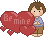 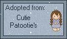 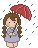
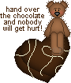 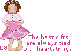
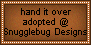 
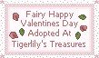
Now...on to my St. Patricks Day adoptions! :)
 
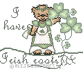 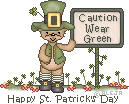
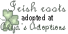 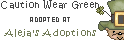
Shamrock used on bkgd, layer one...was made by following a tutorial at: Japhes Pixels
Backgrounds, banner and buttons made by My Mom...
|